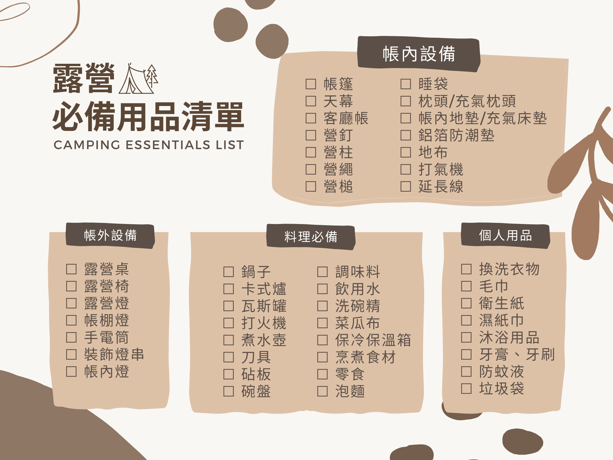

帳內設備
帳篷
帳篷是露營中最重要的裝備之一。建議可以依據「舒適度」挑選帳篷的大小。舉例來說：4人帳睡2人、6人帳睡4人，以此類推。
天幕
天幕主要用於在夏天，可以通風涼爽也可幫帳篷遮陽擋雨。
客廳帳
客廳帳主要用於冬天可以保暖又能防風雨，天幕、客廳帳是主要的活動空間，兩者功能相似，二選一即可。
露營配件
營柱、營釘、營繩這些基本營具可多添購、備用一些，防患未然。
地布
地步主要是搭帳棚時先鋪上保護帳底，防止帳底被碎石劃破以及防止水氣、阻隔地面上的溼氣。
寢具
枕頭建議選用充氣枕在攜帶上更方便，也可省去更多空間。被子/睡袋二選一，睡袋較被子佔的空間小也較輕便。
帳內地墊
它有防潮、保暖的功能，幫助你隔絕夜晚時地面的濕氣與寒氣穿透布料影響睡眠品質，重量輕好攜帶，所以是登山野營首選唷。
充氣床墊
充氣床墊可以增加舒適度，且減少身體與冰冷地面的接觸來保暖身體，在堅硬地板的環境下使用享有更好的睡眠品質。
打氣機
如果你是買手動充氣式帳篷、床墊，建議攜帶自動打氣機或是打氣筒，可以節省不少力氣。
延長線
在大多數的露營區都有提供電源的地方，但切記不要過多串接。建議使用較粗大且較長的動力延長線會更安全，以及在使用延長線時，不要整捆捲在一起，時刻注意安全！
帳外設備
露營桌椅
露營桌椅款式很多選擇自己覺得舒適的款式即可。另外有些露營區有提供座位區，就可以省去攜帶的必要性。
照明燈
照明燈建議是必備的用品之一，在無光害的營地，照明設備露營燈、帳篷燈、手電筒是必然需要的以免太暗而絆倒，夜晚才能安心活動。
料理必備
料理用具
料理用具可依照自己的下廚習慣準備，像是鍋子、刀具、砧板、調味料、水壺、碗盤組、洗碗精等。
卡式爐
卡式爐是烹煮食物必備用品！在營地可以銅盤烤肉或煮火鍋、泡麵、湯品等等，建議可使用防風片幫助瓦斯爐擋風，食材會較快熟透也較安全。
保冷保溫箱
保冷保溫箱主要是讓食材在上山的路程時能保溫保鮮，比較不會吃壞肚子。
食物
要吃的、要喝的、要煮的食材通通可以準備！
個人用品
盥洗用具
大多露營區並未提供盥洗用具，建議可以自己使用小瓶分裝攜帶。
垃圾袋
露營區基本上會有公共丟垃圾的地方，都是方便清理的，垃圾不亂丟，共同保持整潔。若沒有公共垃圾桶，可用自己的垃圾袋將垃圾打包帶走。
急救包
出門在外還是需要準備急救包以備不時之需。像是放一些簡單的藥品、繃帶及ＯＫ蹦，小傷口可以用醫藥箱做簡單處理即可。
防蚊液
戶外蚊蟲很多，建議可帶防蚊液、捕蚊燈甚至是防蚊貼片等等，避免被蚊子侵襲！